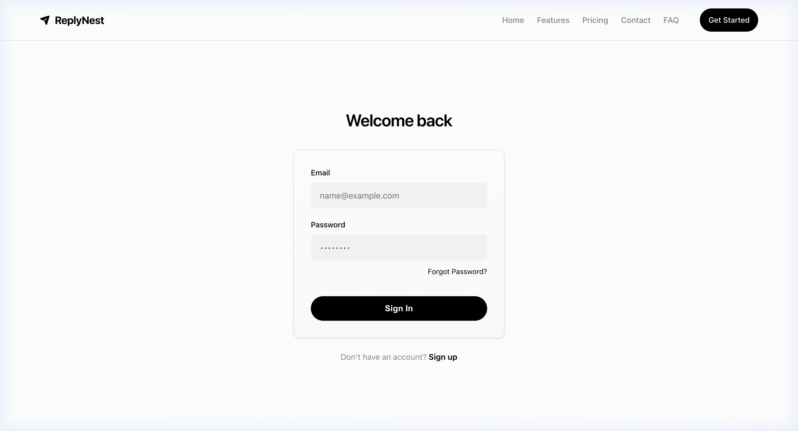

01

ReplyNest
Instagram Workflow & Engagement Automation Platform
A production-grade Instagram DM automation SaaS designed for creators and businesses to scale customer engagement, lead capture, and instant conversational workflows.
Features a visual workflow builder, instant Comment-to-DM triggers, keyword-based conversational flows, real-time execution logs, multi-tenant isolation, Meta OAuth 2.0 authentication, Razorpay billing, and containerized deployment with PostgreSQL and Traefik.
Meta Graph APIOAuth 2.0Node.jsPostgreSQLDockerTraefikRazorpaySPA
Focus: API Architecture · Webhooks · Multi-Tenant SaaS · Workflow Automation